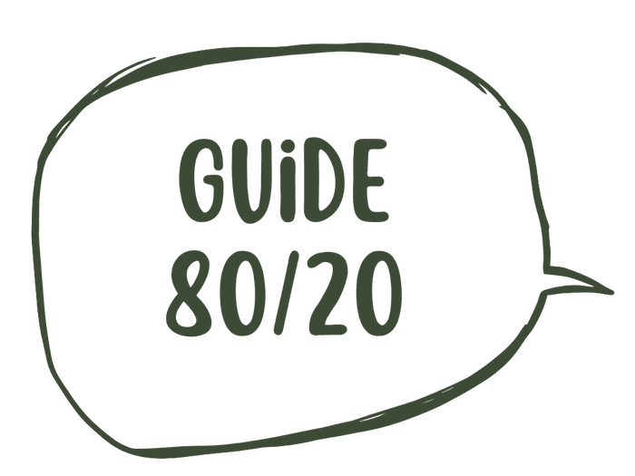
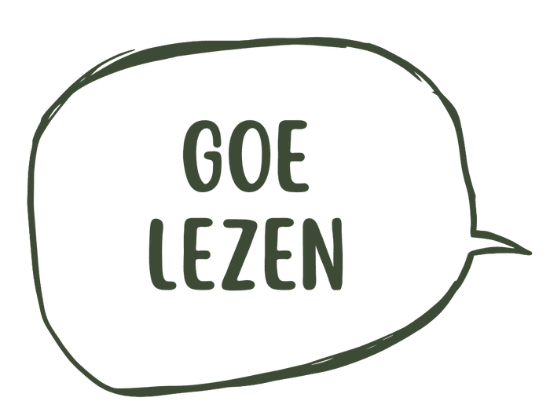
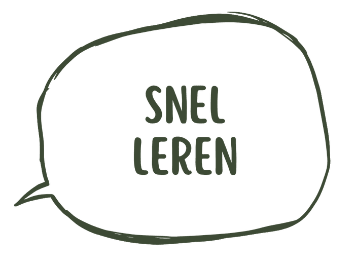
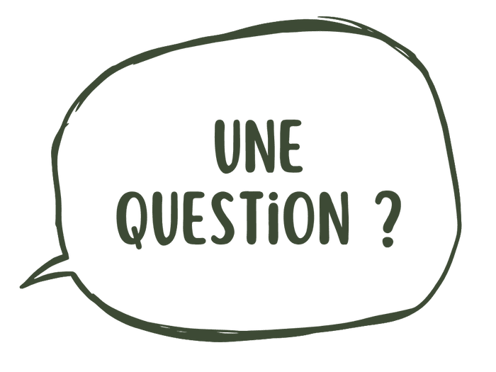

Das Goe — Le guide 80/20
Tu veux réviser un peu, mais tu ne sais pas quoi apprendre par cœur ?
Normal. La plupart des méthodes te donnent 100% du vocabulaire — grammaire, exceptions, listes interminables. Toi, pour oser parler, t'as juste besoin des 20% qui reviennent tout le temps.
C'est exactement ce que ce guide te donne. Rien de plus.

Goe lezen
Pas un manuel scolaire. Pas une grammaire complète que tu n'ouvriras jamais deux fois.
Le guide 80/20 reprend uniquement les mots et les phrases qui reviennent vraiment dans une conversation du quotidien — celles que j'utilise moi-même, dans chaque langue que j'ai apprise sur le tas, au Pérou, en Ukraine, en Chine. Pas la théorie apprise en classe. Ce qui sert concrètement à se débrouiller, tout de suite.
Le guide 80/20 de Das Goe est un PDF téléchargeable à 29€, bilingue néerlandais-français avec indication de prononciation, classé par situation de conversation plutôt que par thème grammatical.
- Classé par situation réelle
Pas par thème scolaire — par ce qui t'arrive vraiment (se présenter, commander, papoter, dire que t'as pas compris).
- Zéro règle de grammaire à apprendre par cœur
Juste ce qu'il faut savoir pour que la phrase sorte.
- Pensé pour être emporté
Sur ton téléphone en balade, imprimé avant un cours en visio.
Le guide

Le guide 80/20 — PDF
Les mots et phrases essentiels pour oser parler néerlandais au quotidien, classés par situation, avec traduction et prononciation simple. À lire une fois, à garder toujours sous la main.
29€ / guide, à vie
J'achète le guideGarantie Das Goe — sans complications
Le guide ne te convient pas ? Écris-moi dans les 7 jours après ton achat, je te rembourse. Sans justification à donner.
Une question ?

Je débute vraiment de zéro, ce guide est-il pour moi ?
Oui. Le guide part du principe que tu ne connais rien par cœur. Chaque mot ou phrase est classé par situation concrète, pas par niveau scolaire.
C'est écrit en néerlandais ou en français ?
Les deux, côte à côte : le mot ou la phrase en néerlandais, la traduction en français juste à côté, et une indication de prononciation simple.
Comment je reçois le guide après l'achat ?
Tu reçois le PDF par e-mail directement après ton achat. Tu peux le lire sur ton téléphone, l'imprimer, le glisser dans ton sac pour la prochaine balade.
Le guide remplace-t-il les cours ou les balades ?
Non. Le guide te donne la matière première, mais c'est en parlant avec quelqu'un — en cours ou en balade — que la parole se débloque vraiment. Le guide est ce que tu emportes avec toi entre deux séances.
Le guide te donne les mots. La parole, elle, se débloque en la pratiquant.
Envie d'aller plus loin ?